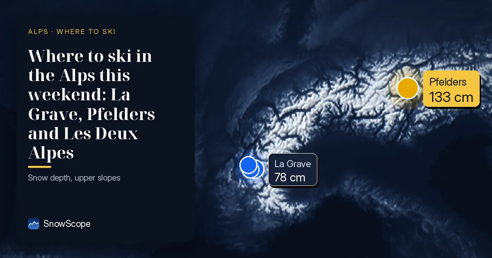

Where to ski in the Alps this weekend: La Grave, Pfelders and Les Deux Alpes
Three resorts stand out for this weekend: La Grave has the steadiest snow gain across its whole mountain, Pfelders holds the deepest cover on its upper slopes at 133 cm, and Les Deux Alpes offers the most dramatic height advantage. All three received major fresh snow in the past three days, and more arrives through the weekend.
See the live snow forecast for La Grave in the SnowScope appSnow depth, powder alerts and the 3D map, free.
Which resort suits your skiing
La Grave drew 61 cm of new snow across 72 hours and sits at 78 cm on its upper slopes. Its strength is depth distribution: the top (3,543 m) holds 72 cm, mid-mountain (3,369 m) has 71 cm, and even the base (3,196 m) keeps 66 cm. This makes La Grave a steady choice if you want to ski from top to bottom without searching for snow.
Pfelders leads the three with 133 cm at the top (2,500 m), but altitude tells the story. Its base at 1,600 m has no snow recorded at the nearest station on 12 November. Pfelders rewards skiers who stay high and chase the shade on north faces.
Les Deux Alpes has the highest peak at 3,511 m and 71 cm of snow there, but drops to 0 cm at its base (1,284 m). The vertical drop is steep and so is the snow line. If you can reach and ski above 2,400 m, Les Deux Alpes delivers; below that, grass shows through.
| Resort | Snow depth | New snow, 72 h | Coming, next days | Top |
|---|---|---|---|---|
| La Grave | 78 cm | 61 cm | 33 cm | 3,543 m |
| Pfelders | 133 cm | 19 cm | 3 cm | 2,500 m |
| Les Deux Alpes | 52 cm | 51 cm | 30 cm | 3,511 m |
| Alpe d'Huez Grand Domaine | 52 cm | 43 cm | 31 cm | 3,306 m |

Temperature and timing this weekend
On Saturday the freezing level at La Grave spans 2,700 m to 3,210 m: upper runs stay firm and fast all day, while lower slopes soften by mid-morning. At Pfelders, the freezing level sits lower (1,870 m to 2,240 m), so skiing above 2,000 m stays safe from wet snow. Les Deux Alpes sits between them, with the freeze line at 2,360 m to 2,610 m on Saturday.
Sunday brings a colder air mass: at La Grave the freezing level drops to 2,660 m to 3,210 m, favoring higher terrain even more. Early starts matter less on Sunday; conditions stay winter-like longer.
Fresh snow through the weekend
Saturday brings 7 cm to La Grave, 0 cm to Pfelders and 6 cm to Les Deux Alpes. Sunday is the main event: La Grave gets 16 cm, Pfelders 1 cm and Les Deux Alpes 17 cm. By Monday morning, La Grave will have 33 cm more than now, Les Deux Alpes 30 cm more, and Pfelders just 3 cm. If fresh powder is your goal, La Grave and Les Deux Alpes are the target; Pfelders has little new snow arriving.
How this season compares
La Grave's mid-mountain (3,369 m) holds only about 11 cm more snow than this date has seen in just 10 of the past 46 winters. That sounds poor, but remember: early November snow is rare anywhere in the Alps. Normally this height has 53 cm on this date, so La Grave is well behind the long-term average.
Les Deux Alpes' mid-slopes sit at a meagre amount compared with the usual 21 cm on this date. However, the top of the mountain at 3,511 m has built a decent base. Snow depth improves dramatically with altitude here.
Ski technique and safety
Early-season snow is often thin: rocks and grass hide just below the surface. Stick to open, groomed pistes, especially on middle-altitude runs where coverage is spotty. North-facing slopes and gullies hold snow longest; south-facing slopes empty fast in the sun.
Before any off-piste skiing or touring, read the official avalanche bulletin for your region. Fresh snow on a cold bed can slide, so stay informed. Check each resort's website for lift openings: not all terrain may run this weekend.
Tips for skiers
- Target La Grave or Les Deux Alpes if you want to ski fresh powder this weekend; Pfelders receives almost no new snow through 16 November.
- Stay above 2,500 m at Pfelders and above 2,400 m at Les Deux Alpes to find reliable snow depth. Below those heights, early-season cover is thin.
- Ski shaded, north-facing slopes: they hold winter conditions and depth better than sunny exposures in November.
- Start early on Saturday to catch dry snow high up before the freezing level rises through the day. Sunday's colder air means conditions stay winter-like longer.
- Check the official avalanche bulletin before leaving the piste, especially after 16 cm of new snow arrives on Sunday.
About these numbers
Resort snow depths are the deepest snow on the resort's upper slopes on the date shown; they are estimates for an area, not a measurement at one point. Forecasts can change. Always read the official avalanche bulletin before going off-piste.
Official avalanche bulletins: EAWS (Alps)
Cite this report
For research, teaching or the press: the numbers and charts are free to reuse under CC BY 4.0 with this citation.
SnowScope (2026), Where to ski in the Alps this weekend: La Grave, Pfelders and Les Deux Alpes, https://snowscope.app/blog/en/2026/11/alps-where-to-ski-this-weekend-13-november-2026.html, accessed 2026-11-13
SnowScope (Atlas Labs). (2026, November 13). Where to ski in the Alps this weekend: La Grave, Pfelders and Les Deux Alpes. SnowScope snow reports. https://snowscope.app/blog/en/2026/11/alps-where-to-ski-this-weekend-13-november-2026.html
BibTeX
@misc{snowscope2026alpswheretoskithisweeken,
author = {{SnowScope (Atlas Labs)}},
title = {Where to ski in the Alps this weekend: La Grave, Pfelders and Les Deux Alpes},
year = {2026},
month = nov,
howpublished = {\url{https://snowscope.app/blog/en/2026/11/alps-where-to-ski-this-weekend-13-november-2026.html}},
note = {Published 2026-11-13 12:52 UTC; accessed 2026-11-13}
}· CC BY 4.0 · Methods, data and tools →
La Grave: snow and temperature by height, this winter vs last (tools) →
Follow La Grave
Free: a message when fresh snow is coming, and the forecast every morning.
More snow reports

Les 2 Alpes forecast for 23–29 November: 47 cm at 3200 m, 41 cm at 2400 m, 14 cm at base. Wednesday 25 is the peak day.

La Grave's top slopes near 3400 m will collect 49 cm in the week of 23–29 November 2026, with Wednesday 25 as the peak day. Data from 16 November.

Les 2 Alpes reaches 3511 m for high snow in December 2026, with an adult 6-day pass priced at 266.50 EUR.